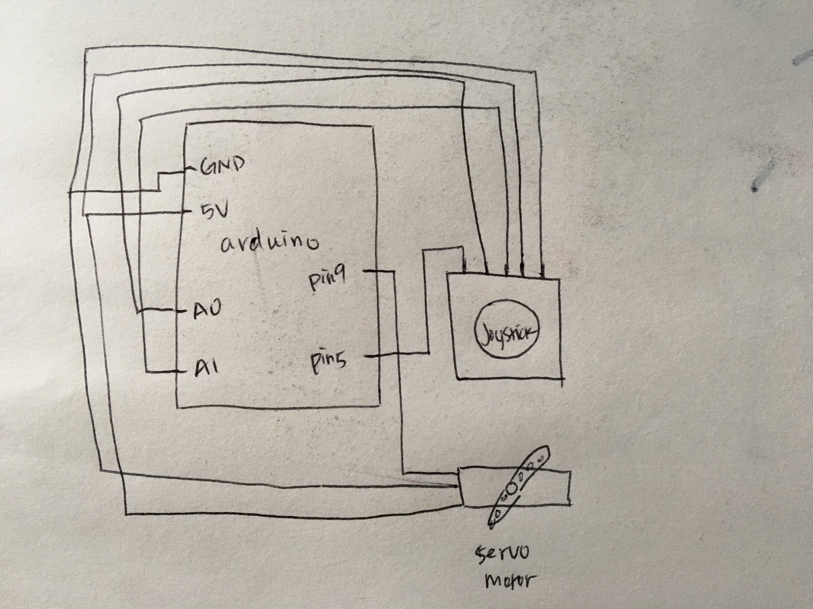
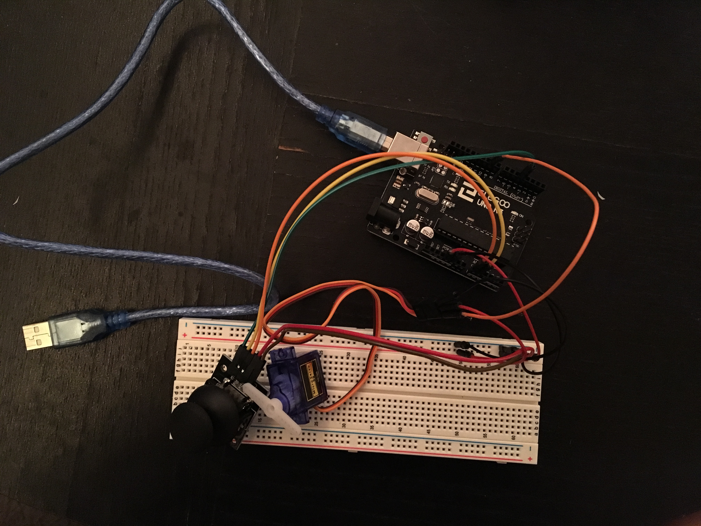

Assignment 5: Servo + Motor
Here is all the documentation for Assignment 5!
The Schematic
 This drawing is the schematic of a servo motor and a joystick. Both of them are connected to GND and 5V. Joystick x is connected to A0 and y is connected to A1. Servo Motor is connected to Pin 5, and joystick is connected to pin 9.The Circuit
 This is the final set up for the circuit looping from pin9, A0, A1, 5V to GND.The Code
//this code helps Servo motor to be controlled by the joystick so that the angles can be switched
#include < Servo.h > //import servo library
Servo myServo; //define servo motor variable
int x = A1; //assign the joystick x
int y = A0; //assign the joystick y
int x_pos = 0; //assign joystick position
int y_pos = 0; //assign joystick position
int initial_position = 120; //assign servo initial position
//set up the initial positions for servo motor and the joystick
void setup() {
myServo.attach(9); //set up servo to pin 9
myServo.write(initial_position); //set up servo initial position to 120 degrees
pinMode(x, INPUT) ; //set A0 as an input
pinMode(y, INPUT) ; //set A1 as an input
}
void loop() {
x_pos = analogRead(x); //read in x position on joystick
y_pos = analogRead(y); //read in y position on joystick
if (x_pos < 300) { //if the x position is less than 300
if (initial_position > 0) { //also if the servo motor angle is more than 0 degree
initial_position = initial_position + 20; //then the servo motor moves 20 degrees more
myServo.write(initial_position); //servo inputs out the angle
delay(100); //pause for 100ms so that the result is obvious
} else { //similar action as the previous one described
initial_position = initial_position - 20;
myServo.write (initial_position) ;
delay (100) ;
}
}
}
The Operation of the Circuit
Below is a short demo of the circuit in operation.